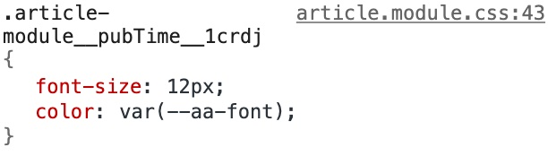

使用 CSS variables 实现主题色切换
Contents
最近在写自己的小项目时，想试试 CSS variables，于是便有了此文。
之前也使用过 Sass，Less 之类的预处理器。因为 node-sass 的安装和编译频繁出现失败的问题，所以一直都是 Less 用的比较多。当我回想日常使用Less的经历时，却发现似乎除了变量，嵌套和函数这三个特性，其他功能基本上没有太多使用。这不由得让我陷入了思考：我在自己的项目中是否还需要使用预处理器？
在我的日常使用习惯中，变量主要是为了解决重复地显式书写变量名或者值，降低设计修改带来的维护成本。而嵌套和函数的使用则主要是为了服务 BEM 规范的，自动编译出长长的 ClassName。
使用 CSS Module 的方案，可以实现类似BEM规范的精髓，使用 CSS custom properties 提供变量的能力。二者结合使用原生CSS就能满足我的需求，无需额外的工具。
CSS Module 也具备类似预处理器的声明变量的能力，但是它的语法在 .css 文件中是不支持的，在我看来算是一种侵入式拓展，至于预处理器提供的 loop、condition 等能力，我相信未来的 CSS 也会支持。
CSS 变量(CSS variables) 是 CSS自定义属性的(CSS custom properties)的别称，有时候也会称之为级联变量(cascading variabels)。使用规定的语法定义和获取变量的值
基本用法
使用--作为属性名的前缀，属性值可以是任何有效的CSS值。比如--main-bg-color，然后通过var()来获取对应的属性值。不过要注意的是，自定义属性名是大小写敏感的。
|
|
同时要清楚的明白：自定义属性也只是属性，仅用于匹配当前选择器及其子孙，这和通常的CSS是一样的。所以我觉得叫做CSS变量还是没有CSS自定义属性更加贴切。
作用域
JavaScript 中变量是有作用域的，要么是全局作用域，要么就是局部作用域。CSS 变量亦是如此。
在CSS变量中，:root 选择器允许你定位到 DOM 中的最顶级元素或文档树。这种方式声明的变量就属于具有全局作用域的变量。
|
|
可以在选择器中，声明相同的自定义属性
|
|
继承
同普通的 CSS 属性一样，自定义属性也会被继承，如果在一个给定的元素上，没有为这个自定义属性设置值，在其父元素上的值会被使用。看一下下面的例子
|
|
.test和.ew 都会继承来自div的--color。甚至可以在HTML的style标签来设置。
|
|
|
|
有效值
在普通的 CSS 属性中，如果属性值是非法值，将会被忽略，如果有继承值，则使用继承值。

当自定义属性值被解析，浏览器不知道它们什么时候会被使用，所以必须认为这些值都是有效的。但是无效的var()会使用继承值或者初始值代替。在Chrome的调试工具中可以看到，即使是无效的var(), 也不会出现被划去的横线

来看一下下面这个例子
|
|
浏览器将 --text-color 的值替换给了 var(--text-color)，但是 16px 并不是 color 的合法属性值。代换之后，该属性不会产生任何作用。浏览器会执行如下两个步骤：
- 检查属性
color是否为继承属性。是，但是没有任何父元素定义了 color 属性。转到2。
- 将该值设置为它的默认初始值，浏览器中
color的默认值是black。
从这里也可以看出来区别于预处理器的编译，
CSS custom properties属于运行时。
通过 JavaScript 操作自定义属性
在这里你会发现，通过JavaScript操作自定义属性和操作CSS样式根本就是一回事。这样再次表名，这的确就是“自定义CSS属性”。
|
|
实现主题色
通过简单的代码实例来阐述说明主题色实现的方式。demo来自Advanced CSS Theming with Custom Properties and JavaScript。
首先在全局下定义自定义属性
|
|
然后定义页面样式
|
|
如果要指定除红色以外的其他颜色，则只需将相应的值指定给 –main-hue 即可。
|
|
为红色，蓝色和绿色定义了三个自定义属性，然后将 --red-hue 变量分配给 --main-hue。

只需要通过一小段代码就可以动态修改主题色
|
|
实现暗黑模式
通过这种方式，可以很方便实现现在很流行的暗黑模式。利用作用域特性，定义全局变量和局部变量，默认是浅色模式
|
|
通过 JavaSctipt 来控制 ClassName，下面是伪代码，假设有一个触发操作的按钮
|
|
兼容性
浏览器支持性非常好，基本所有的现代浏览器都支持良好（本文写作时已超过 95.29%）

总结
下面开始技术总结
CSS custom properties允许开发人员自定义CSS属性及对应的属性值- 自定义属性有作用域之分，
：root可以定义全局范围的自定义属性，在选择器内部的自定义属性只能子元素下作用 - 自定义属性也遵循CSS属性的继承和级联规则
- 如果自定义属性的值无效，将会使用继承值或者默认值
- 可以用JavaSctript操作自定义属性，就像操作CSS原生属性一样
Author 张伦
LastMod 2020-03-21